Líneas de tiempo Apple
| NOMBRE | VERSION (SO) | VERSION KERNEL | AÑO LANZAMIENTO | PROCESADOR | VELOCIDAD | ARQUITECTURA | NUMERO DE HILOS | TIPO | CAPACIDAD | FRECUENCIA (VELOCIDAD) | NOVEDADES DEL HARDWARE | NOVEDADES DEL SOFTWARE | PANTALLAZO ESCRITORIO |
|---|---|---|---|---|---|---|---|---|---|---|---|---|---|
| Apple I | No tenía un sistema operativo formal, pero se utilizaba un monitor y un teclado para interactuar con el hardware. | N/A | 1976 | MOS 6502 | 1 MHz | 8-bit | 1 | DRAM | 4 KB (expandible a 48 KB) | No especificada | Primer producto de Apple diseñado por Steve Wozniak y Steve Jobs, se vendía en forma de kit. | Incluía un monitor y un teclado, con software básico escrito por el usuario. | 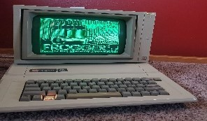 | Apple III | Apple SOS (Apple Operating System) | N/A | 1980 | Synertek 6502 | 2 MHz | 8-bit | 1 | DRAM | 128 KB (expandible a 256 KB) | No especificada | Primer Apple con un diseño más robusto y orientado a negocios, almacenamiento en disco de 5.25 pulgadas. | Introducción de Apple SOS, un sistema operativo con más características y capacidad multitarea. | 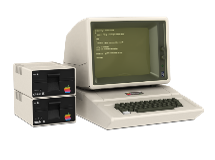 |
| Apple III+ | No tenía un sistema operativo formal, pero se utilizaba AppleSoft BASIC. | N/A | 1983 | MOS 6502 | 1 MHz | 8-bit | 1 | DRAM | 64 KB (expandible a 256 KB) | No especificada | Mejora en la capacidad de RAM y expansión de los puertos. | Mejoras en la compatibilidad de software y hardware. | 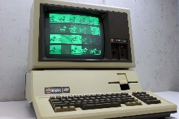 |
| Apple Lisa | Lisa OS | N/A | 1983 | Motorola 68000 | 5 MHz | 16-bit | 1 | DRAM | 1 MB (expandible a 2 MB) | No especificada | Primer computador personal con interfaz gráfica de usuario (GUI) y ratón. | Introducción de la interfaz gráfica de usuario con ventanas y iconos, Lisa Office System. | 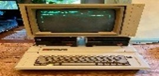 |
| Macintosh 128K | System Software 1.0 | N/A | 1984 | Motorola 68000 | 8 MHz | 16-bit | 1 | DRAM | 128 KB (expandible a 512 KB) | No especificada | Primer Macintosh con System Software, diseño compacto todo-en-uno. | Interfaz gráfica de usuario intuitiva. | 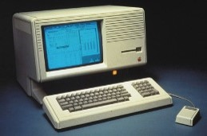 |
| Apple IIc | No tenía un sistema operativo formal, pero se utilizaba AppleSoft BASIC. | N/A | 1984 | MOS 6502 | 1 MHz | 16-bit | 1 | DRAM | 128 KB (expandible a 1 MB) | No especificada | Diseño más compacto y portátil en comparación con el Apple IIe, con una unidad de disco interna. | Compatibilidad con el software de Apple II y nuevas características de portabilidad. | |
| Apple IIGS | ProDOS 8 (Apple IIgs), GS/OS | N/A | 1986 | wDC 65C816 | 2.8 MHz | 16-bit | 1 | DRAM | 256 KB (expandible a 8 MB) | No especificada | Mejoras en el rendimiento con un procesador de 16-bit, gráficos mejorados y sonido. | Introducción de GS/OS, un sistema operativo con una interfaz gráfica mejorada para la línea Apple II. | 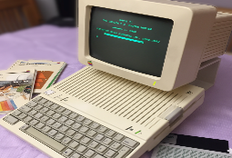 |
| Macintosh SE | System Software 6.0.8 | N/A | 1987 | Motorola 68000 | 8 MHz | 16-bit | 1 | DRAM | 1 MB (expandible a 4 MB) | No especificada | Diseño compacto y modular, introducción de una segunda bahía para discos duros internos. | Mejora del System Software, introducción de nuevas utilidades y capacidades de hardware. | 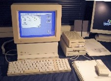 |
| Macintosh Plus | System Software 4.0.1 | N/A | 1986 | Motorola 68000 | 8 MHz | 16-bit | 1 | DRAM | 1 MB (expandible a 4 MB) | No especificada | Mayor capacidad de RAM y disco duro interno de 3.5 pulgadas. | Mejoras en el sistema operativo y el soporte para nuevas aplicaciones. | 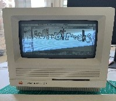 |
| Macintosh Portable | System Software 6.0.5 | N/A | 1989 | Motorola 68000 | 16 MHz | 16-bit | 1 | DRAM | 1 MB (expandible a 8 MB) | No especificada | Primera computadora portátil de Apple con una pantalla LCD, diseño robusto para portabilidad. | Compatible con System Software de Macintosh, mejoras en software de administración de energía. | 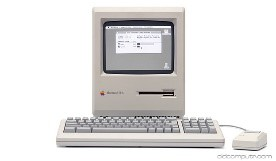 |
| Macintosh II | System Software 4.0 | N/A | 1987 | Motorola 68020 | 16 MHz | 32-bit | 1 | DRAM | 1 MB (expandible a 8 MB) | No especificada | Primer Macintosh con capacidad de expansión mediante tarjetas, diseño modular con múltiples slots. | Soporte para el entorno gráfico de Macintosh y la expansión de hardware con nuevas tarjetas. | 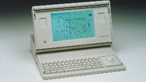 |
| Macintosh IIfx | System Software 6.0.7 | N/A | 1990 | Motorola 68030 | 40 MHz | 32-bit | 1 | DRAM | 8 MB (expandible a 128 MB) | No especificada | Procesador más rápido, mejor rendimiento gráfico y de cálculo, diseño avanzado para su época. | Mejoras en la gestión del hardware y rendimiento en el sistema operativo. | 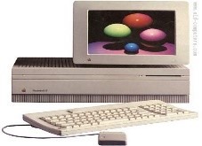 |
| Macintosh Quadra 700 | System Software 7.0.1 | N/A | 1991 | Motorola 68040 | 25 MHz | 32-bit | 1 | DRAM | 8 MB (expandible a 68 MB) | No especificada | Avanzado rendimiento gráfico y de procesamiento, diseño modular con expansión de memoria. | Introducción de System Software 7.0, que trajo mejoras significativas en la interfaz gráfica y el soporte para redes. | 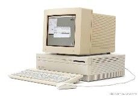 |
| Macintosh LC | System Software 7.0 | N/A | 1990 | Motorola 68020 | 16 MHz | 32-bit | 1 | DRAM | 2 MB (expandible a 10 MB) | No especificada | Sistema compacto y asequible con capacidad de expansión y opciones de pantalla a color. | Mejora en la interfaz de usuario y soporte para aplicaciones nuevas. | 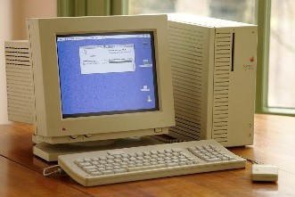 |
| Macintosh Color Classic | System Software 7.1 | N/A | 1993 | Motorola 68030 | 16 MHz | 32-bit | 1 | DRAM | 4 MB (expandible a 10 MB) | No especificada | Pantalla a color, diseño pequeño y atractivo para el hogar. | Mejora en el soporte para gráficos y multimedia. | 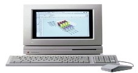 |
| PowerBook 5300 | Mac OS 7.5 | N/A | 1994 | PowerPC 603e | 100 MHz | 32-bit | 1 | DRAM | 8 MB (expandible a 64 MB) | No especificada | Diseño portátil, pantalla LCD de 10.4 pulgadas, batería recargable. | Soporte para Mac OS 7.5, mejoras en la administración de energía. | 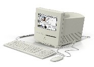 |
| Power Macintosh 6100 | Mac OS 7.5 | N/A | 1994 | PowerPC 601 | 60 MHz | 32-bit | 1 | DRAM | 8 MB (expandible a 72 MB) | No especificada | Primer Macintosh con procesador PowerPC, soporte para PCI. | Mac OS 7.5 con mejoras en la interfaz y compatibilidad. | 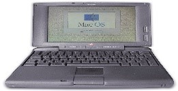 |
| Power Macintosh 7100 | Mac OS 7.5 | N/A | 1994 | PowerPC 603 | 66 MHz | 32-bit | 1 | DRAM | 8 MB (expandible a 136 MB) | No especificada | Mejora en el rendimiento gráfico y de procesamiento. | Introducción de Mac OS 7.5. | 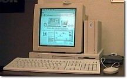 |
| Power Macintosh 8100 | Mac OS 7.5 | N/A | 1994 | PowerPC 601 | 80 MHz | 32-bit | 1 | DRAM | 8 MB (expandible a 136 MB) | No especificada | Alto rendimiento para tareas de multimedia y gráficos. | Mac OS 7.5 con nuevas características. | 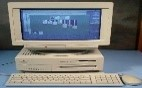 |
| Power Macintosh G3 | Mac OS 8.0 | N/A | 1997 | PowerPC G3 | 233 MHz | 32-bit | 1 | SDRAM | 32 MB (expandible a 1 GB) | 66 MHz | Introducción del procesador G3 con mejoras significativas en el rendimiento. | Mac OS 8.0 con nuevas características de interfaz y estabilidad. | 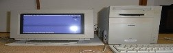 |
| PowerBook G3 | Mac OS 8.6 | N/A | 1998 | PowerPC G3 | 250 MHz | 32-bit | 1 | SDRAM | 64 MB (expandible a 192 MB) | 66 MHz | Diseño compacto y ligero con mejor rendimiento de batería. | Mac OS 8.6 con mejoras en la estabilidad y el rendimiento. | 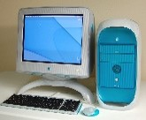 |
| Power Macintosh G4 | Mac OS 9.0 | N/A | 1999 | PowerPC G4 | 450 MHz | 32-bit | 1 | SDRAM | 64 MB (expandible a 1 GB) | 66 MHz | Introducción del procesador G4 con mejoras en el rendimiento gráfico y de cálculo. | Mac OS 9.0 con mejoras en la interfaz de usuario y estabilidad. | |
| iMac G3 | Mac OS 8.5 | XNU | 1999 | PowerPC G3 | 233 MHz | 32-bit | 1 | DDR SDRAM | 32 MB (expandible a 128 MB) | 66 MHz | Diseño todo-en-uno con pantalla CRT y carcasa colorida. | Mac OS 8.5 con nuevas características y mejoras en la usabilidad. | 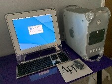 |
| iMac G4 | Mac OS X 10.1 | XNU | 2002 | PowerPC G4 | 700 MHz | 32-bit | 1 | DDR SDRAM | 128 MB (expandible a 1 GB) | 133 MHz | Diseño innovador con pantalla LCD montada en un brazo ajustable. | Mac OS X 10.1, introducción de la interfaz Aqua y nuevas características. | |
| iMac G5 | Mac OS X 10.4 | XNU | 2004 | PowerPC G5 | 1.6 GHz | 32-bit | 1 | DDR SDRAM | 256 MB (expandible a 2 GB) | 400 MHz | Procesador G5 con soporte de 64-bit, diseño todo-en-uno con pantalla LCD de 17 o 20 pulgadas. | Mac OS X 10.4 Tiger, introducción de nuevas características como Spotlight. | |
| iMac Intel Core Duo | Mac OS X 10.4 | XNU | 2006 | Intel Core Duo | 1.83 GHz | 32-bit | 1 | DDR2 SDRAM | 512 MB (expandible a 2 GB) | 667 MHz | Transición a procesadores Intel, mejora en el rendimiento y la compatibilidad con software. | Mac OS X 10.4 con soporte para la nueva arquitectura Intel. | 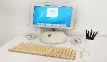 |
| iMac (Aluminum) | Mac OS X 10.5 | XNU | 2009 | Intel Core 2 Duo | 2.66 GHz | 64-bit | 1 | DDR3 SDRAM | 4 GB (expandible a 16 GB) | 1066 MHz | Diseño en aluminio, pantalla de 21.5 o 27 pulgadas, más opciones de conectividad. | Mac OS X 10.5 Leopard con nuevas características y mejor rendimiento. | |
| iMac Retina 5K | OS X Yosemite | XNU | 2014 | Intel Core i5 | 3.5 GHz | 64-bit | 1 | DDR3 SDRAM | 8 GB (expandible a 32 GB) | 1600 MHz | Pantalla Retina 5K con resolución de 5120 x 2880 píxeles, diseño delgado y elegante. | OS X Yosemite con mejoras en la interfaz y nuevas características. | 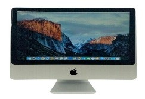 |
| iMac 24" (M1) | macOS Big Sur | XNU | 2021 | Apple M1 | 3.2 GHz (base) | 64-bit | 8 | Unified Memory | 8 GB (expandible a 16 GB) | No especificada | Diseño delgado, pantalla Retina 4.5K, procesador Apple M1 con arquitectura ARM. | macOS Big Sur con soporte para el nuevo hardware M1 y nuevas características de interfaz. | 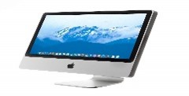 |
| Mac Studio | macOS Monterey | XNU | 2022 | Apple M1 Ultra | Hasta 3.8 GHz | 64-bit | 20 | Unified Memory | 32 GB (expandible a 128 GB) | No especificada | Rendimiento extremo con el M1 Ultra, múltiples opciones de conectividad, diseño compacto. | macOS Monterey con soporte para el hardware M1 Ultra y nuevas capacidades de software. |
Linea de tiempo windows
| NOMBRE | VERSION (SO) | VERSION KERNEL | AÑO LANZAMIENTOL | PROCESADOR | VELOCIDAD | ARQUITECTURA | NUMERO DE HILOS | TIPO | FRECUENCIA (VELOCIDAD) | CAPACIDAD | NOVEDADES DEL HARDWARE | NOVEDADES DEL SOFTWARE | PANTALLAZO ESCRITORIO |
|---|---|---|---|---|---|---|---|---|---|---|---|---|---|
| Windows 1.0 | 1.0 | 1.0 | 1985 | Intel 8088 | 4.77 MHz | x86 | 1 | DRAM | 640 KB o más | 4.77 MHz (procesadores Intel 8088 y compatibles) | Requería un procesador Intel 80286, 640 KB de RAM y un disco duro. | Introdujo ventanas superpuestas, iconos de escritorio y mejor soporte gráfico. | 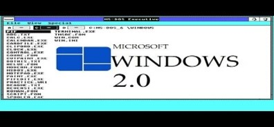 |
| Windows 2.0 | 2.0 | 2.0 | 1987 | Intel 8086/8088 | 12-20 MHz | x86 | 1 | DRAM | 1 MB o más | 6-8 MHz (procesadores Intel 8086 y 8088) | Requería un procesador Intel 8086/8088, 640 KB de RAM y 6 MB de espacio en disco duro. | Mejoró la interfaz de usuario, con el Program Manager y el File Manager. Mejor soporte para aplicaciones DOS. | |
| Windows 3.0 | 3.0 | 3.0 | 1990 | Intel 80286/80386 | 12-33 MHz | x86 | 1 | DRAM | 2 MB o más | 12-33 MHz (procesadores Intel 80286 y 80386) | Similar a Windows 3.0, pero recomendaba más RAM (2 MB). | Tipografías TrueType, mejor soporte multimedia y mejor rendimiento general. | 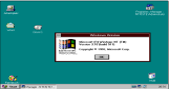 |
| Windows 95 | 95 | 4.0 | 1995 | Intel 80386/80486 | 66 MHz o más | x86 | 1 | SDRAM | 4 MB o más | 16-300 MHz (procesadores Intel 80386 y 80486) | Requería un procesador 386DX, 4 MB de RAM y 50-55 MB de espacio en disco duro. | Introdujo el menú de inicio, la barra de tareas y nombres de archivos largos. Primera versión con Plug and Play. | 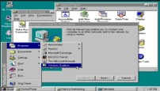 |
| Windows 98 | 98 | 4.1 | 1998 | Intel Pentium | 66 MHz o más | x86 | 1 | SDRAM | 8 MB o más | 16-300 MHz | Requería un procesador 486DX, 16 MB de RAM y 195 MB de espacio en disco duro. | Mejoras en el soporte de hardware, Internet Explorer 4, y el sistema de archivos FAT32. | 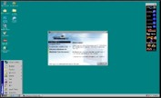 |
| Windows ME | ME | 4.9 | 2000 | Intel Pentium | 66 MHz o más | x86 | 1 | SDRAM | 16 MB o más | 150-600 MHz (procesadores Intel Pentium, Pentium II y Pentium III) | Requería un procesador Pentium, 32 MB de RAM y 320 MB de espacio en disco duro. | Mejora en la interfaz de usuario, restauración del sistema y más características multimedia. | 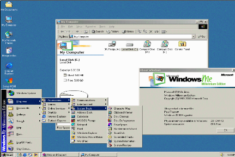 |
| Windows 2000 | 2000 | 5.0 | 2000 | Intel Pentium II/III | 233 MHz o más | x86 | 1 | SDRAM | 64 MB o más | 16-300 MHz (procesadores Intel Pentium II y Pentium III) | Requería un procesador Pentium, 64 MB de RAM y 2 GB de espacio en disco duro. | Orientado a negocios, mayor estabilidad y seguridad, soporte para sistemas de archivos NTFS. |
|
| Windows XP | XP | 5.1 | 2001 | Intel Pentium 4, Athlon XP | 233 MHz o más | x86 | 1 | DDR SDRAM | 128 MB o más | 1.3 - 3.8 GHz (procesadores Pentium 4, Athlon XP y posteriores) | Requería un procesador Pentium, 64 MB de RAM y 1.5 GB de espacio en disco duro. | Nueva interfaz gráfica, mejor gestión de redes y multimedia, más estabilidad y soporte para varias cuentas de usuario. | 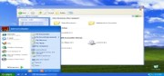 |
| Windows Vista | Vista | 6.0 | 2007 | Intel Core y AMD Athlon 64 X2 | 1 GHz o más | x86/x64 | 1 | DDR2 SDRAM | 512 MB o más | 1.8 - 3.4 GHz (procesadores Intel Core y AMD Athlon 64 X2) | Requería un procesador de 800 MHz, 512 MB de RAM y 15 GB de espacio en disco duro. | Nueva interfaz Aero, mejores capacidades de búsqueda, seguridad mejorada con UAC. | 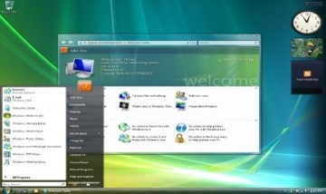 |
| Windows 7 | 7 | 6.1 | 2009 | Intel Core 2 o superior | 1 GHz o más | x86/x64 | 1 | DDR3 SDRAM | 1 GB (32-bit) o 2 GB (64-bit) o más | 1.8 - 3.5 GHz (procesadores Intel Core 2 Duo, Core i3/i5/i7, AMD Phenom II) | Requería un procesador de 1 GHz, 1 GB de RAM y 16 GB de espacio en disco duro. | Mejor rendimiento, interfaz más pulida, mejor soporte para dispositivos táctiles. | 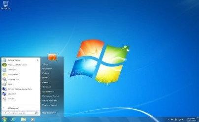 |
| Windows 8 | 8 | 6.2 | 2012 | Intel Core i3 o superior | 1 GHz o más | x86/x64 | 1 | DDR3 SDRAM | 1 GB (32-bit) o 2 GB (64-bit) o más | 1.8 - 4.0 GHz (procesadores Intel Core i3/i5/i7, AMD FX) | Requería un procesador de 1 GHz, 1 GB de RAM y 16 GB de espacio en disco duro. | Interfaz Metro, mejor soporte para dispositivos táctiles, inicio rápido. | 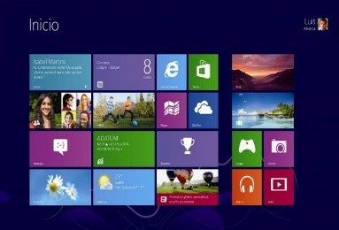 |
| Windows 8.1 | 8.1 | 6.3 | 2013 | Intel Core i3 o superior | 1 GHz o más | x86/x64 | 1 | DDR3 SDRAM | 1 GB (32-bit) o 2 GB (64-bit) o más | 1.8 - 4.0 GHz (procesadores Intel Core i3/i5/i7, AMD FX) | Requerimientos similares a Windows 8. | Mejoras en la interfaz de usuario, regreso del botón de inicio, mejor integración con servicios en la nube. | 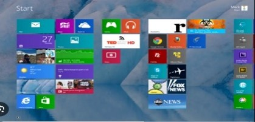 |
| Windows 10 | 10 | 10.0 | 2015 | Intel Core i3 o superior | 1 GHz o más | x86/x64 | 1 | DDR3/DDR4 SDRAM | 1 GB (32-bit) o 2 GB (64-bit) o más | 1.8 - 5.0 GHz (procesadores Intel Core i5/i7/i9, AMD Ryzen) | Requería un procesador de 1 GHz, 1 GB de RAM y 16 GB de espacio en disco duro. | Interfaz unificada para diferentes dispositivos, Cortana, navegador Edge, actualizaciones frecuentes. | 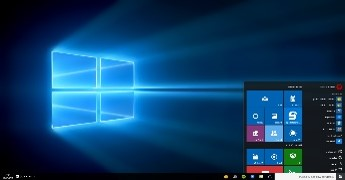 |
| Windows 11 | 11 | 10.0 | 2021 | Intel Core i5 de 8ª generación o AMD Ryzen 5 2000 o superior | 1 GHz o más | x86/x64 | 1 | DDR4 SDRAM | 4 GB o más | 1.8 - 5.0 GHz (procesadores Intel Core i5/i7/i9, AMD Ryzen) | Requiere un procesador compatible de 64 bits, 4 GB de RAM y 64 GB de espacio en disco duro. | Nueva interfaz de usuario, mejoras en rendimiento y seguridad, mejor integración con aplicaciones Android. | 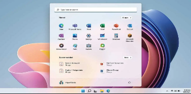 |
Linea de tiempo windows server
| NOMBRE | VERSION (SO) | VERSION KERNEL | AÑO LANZAMIENTOL | PROCESADOR | VELOCIDAD | ARQUITECTURA | NUMERO DE HILOS | TIPO | FRECUENCIA (VELOCIDAD) | CAPACIDAD | NOVEDADES DEL HARDWARE | NOVEDADES DEL SOFTWARE | PANTALLAZO ESCRITORIO |
|---|---|---|---|---|---|---|---|---|---|---|---|---|---|
| Windows NT 3.1 | 3.1 | 3.1 | 1993 | Intel 80386 | 12-33 MHz | x86 | 1 | DRAM | 12 MB | 12-33 MHz | Requería un procesador 386 o superior, 12 MB de RAM mínimo. | Primer sistema operativo NT de 32 bits, multitarea preferente, soporte para multiprocesamiento simétrico. | 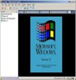 |
| Windows NT 4.0 | 4.0 | 4.0 | 1996 | Intel Pentium | 60-300 MHz | x86 | 1 | DRAM | 16 MB | 60-300 MHz | Procesador 486 o superior, 16 MB de RAM mínimo. | Interfaz gráfica similar a Windows 95, mejoras en seguridad y estabilidad. | 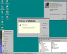 |
| Windows 2000 | 5.0 | 5.0 | 2000 | Intel Pentium II/III/IV | 233 MHz - 1 GHz | x86 | 1 | DRAM | 64 MB | 233 MHz - 1 GHz | Procesador Pentium 133 MHz o superior, 64 MB de RAM recomendados. | Mejoras en la gestión de directorios activos, sistema de archivos NTFS 3.0. | 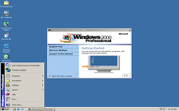 |
| Windows XP Professional | 5.1 | 5.1 | 2001 | Intel Pentium 4 | 1.3 - 3.8 GHz | x86 | 1 | DRAM | 128 MB | 1.3 - 3.8 GHz | Procesador de 300 MHz o superior, 128 MB de RAM mínimo. | Mejora en rendimiento y gráficos. | 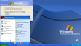 |
| Windows Vista Business | 6.0 | 6.0 | 2007 | Intel Core 2 Duo | 1.8 - 3.0 GHz | x86/x64 | 2 | DRAM | 1 GB | 1.8 - 3.0 GHz | Procesador de 1 GHz, 1 GB de RAM, soporte para DirectX 9. | Introducción de Aero, mejoras en seguridad. | 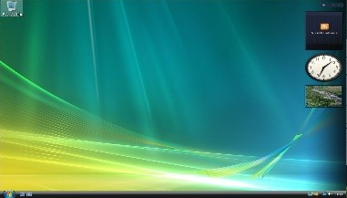 |
| Windows 7 Professional | 6.1 | 6.1 | 2009 | Intel Core i3/i5/i7 | 1.8 - 3.4 GHz | x86/x64 | 2h-4h | DRAM | 2 GB | 1.8 - 3.4 GHz | Procesador de 1 GHz, 2 GB de RAM para 64-bit, soporte para USB 3.0. | Mejora en rendimiento y compatibilidad, interfaz más refinada. | 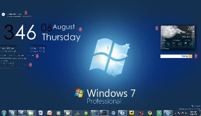 |
| Windows 8.1 Pro | 6.3 | 6.3 | 2013 | Intel Core i3/i5/i7 | 1.8 - 3.5 GHz | x86/x64 | 2h-4h | DRAM | 2 GB | 1.8 - 3.5 GHz | Procesador de 1 GHz, 2 GB de RAM, soporte para NFC y sensores. | Mejoras en la interfaz Metro, mejoras en rendimiento. | 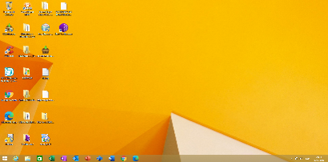 |
| Windows 10 Pro | 10.0 | 10.0 | 2015 | Intel Core i3/i5/i7 | 1.8 - 4.0 GHz | x86/x64 | 2h-4h | DRAM | 2 GB | 1.8 - 4.0 GHz | Procesador de 1 GHz, 2 GB de RAM para 64-bit, TPM 2.0 para algunas características. | Mejoras en la administración de dispositivos y seguridad. | 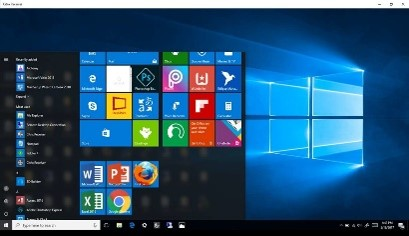 |
| Windows 11 Pro | 10.0 | 10.0 | 2021 | Intel Core i5/i7/i9 | 1.8 - 5.0 GHz | x86/x64 | 2h-4h | DRAM | 4 GB | 1.8 - 5.0 GHz | Procesador de 1 GHz y 2 núcleos, 4 GB de RAM, TPM 2.0, UEFI con Secure Boot. | Interfaz renovada, soporte para TPM 2.0, mejoras en seguridad y administración. |
Líneas de tiempo D.O.S
| NOMBRE | VERSION (SO) | VERSION KERNEL | AÑO LANZAMIENTO | PROCESADOR | VELOCIDAD | ARQUITECTURA | NUMERO DE HILOS | TIPO | FRECUENCIA (VELOCIDAD) | CAPACIDAD | NOVEDADES DEL HARDWARE | NOVEDADES DEL SOFTWARE | PANTALLAZO ESCRITORIO |
|---|---|---|---|---|---|---|---|---|---|---|---|---|---|
| MS-DOS 1.x | 1.x | 1.0 | 1981 | Intel 8088 | 4.77 MHz | 16 bits | 1 | DRAM | 64Kb | Primera versión para PC compatibles | Soporte básico para discos duros y disquetes | 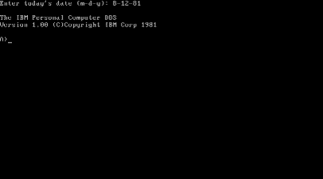 | |
| MS-DOS 2.x | 2.x | 2.0 | 1983 | Intel 8088/8086 | 4.77 MHz | 16 bits | 1 | DRAM | 265 Kb | Soporte para discos duros y estructuras de directorios | Introducción de directorios y mejoras en la gestión de archivos | 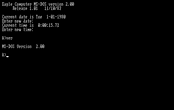 | |
| MS-DOS 3.x | 3.x | 3.0 | 1984 | Intel 8088/8086 | 4.77 MHz | 16 bits | 1 | DRAM | 265 Kb | Mejora en la compatibilidad con discos duros más grandes | Mejoras en el manejo de discos y soporte para redes básicas | 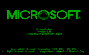 | |
| MS-DOS 3.00 | 3.00 | 3.0 | 1984 | Intel 8088/8086 | 4.77 MHz | 16 bits | 1 | DRAM | 265 Kb | Mejora en la compatibilidad con discos duros más grandes | Mejoras en el manejo de discos y soporte para redes básicas | 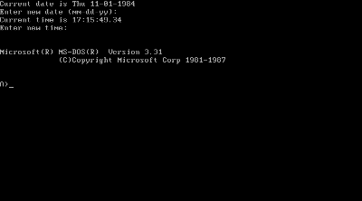 | |
| MS-DOS 3.10 | 45568 | 45568 | 1985 | Intel 8088/8086 | 4.77 MHz | 16 bits | 1 | DRAM | 265 Kb | Mejoras en el soporte de hardware y discos | Mejoras en la administración de discos y compatibilidad de hardware | 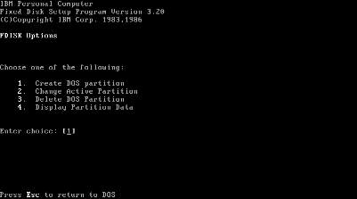 | |
| MS-DOS 3.20 | 3.20 | 3.20 | 1986 | Intel 8088/8086 | 4.77 MHz | 16 bits | 1 | DRAM | 265 Kb | Mejoras en la administración de discos y compatibilidad de hardware | Mejoras en el soporte de redes y herramientas de administración | 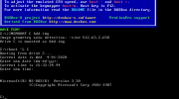 | |
| MS-DOS 3.10 | 45568 | 45568 | 1985 | Intel 8088/8086 | 4.77 MHz | 16 bits | 1 | DRAM | 265 Kb | Mejoras en el soporte de hardware y discos | Mejoras en la administración de discos y compatibilidad de hardware | ||
| MS-DOS 3.20 | 3.20 | 3.20 | 1986 | Intel 8088/8086 | 4.77 MHz | 16 bits | 1 | DRAM | 265 Kb | Mejoras en la administración de discos y compatibilidad de hardware | Mejoras en el soporte de redes y herramientas de administración | ||
| MS-DOS 3.21 | 3.21 | 3.21 | 1988 | Intel 8088/8086 | 4.77 MHz | 16 bits | 1 | DRAM | 265 Kb | Mejoras en la administración de discos y soporte de hardware | Mejoras en las herramientas de administración de discos | ||
| MS-DOS 3.30 | 3.30 | 3.30 | 1989 | Intel 8088/8086 | 4.77 MHz | 16 bits | 1 | DRAM | 265 Kb | Mejoras en la administración de discos y soporte de hardware | Mejoras en las herramientas de administración de discos | ||
| MS-DOS 3.31 | 3.31 | 3.31 | 1990 | Intel 8088/8086 | 4.77 MHz | 16 bits | 1 | DRAM | 265 Kb | Mejoras en la administración de discos y soporte de hardware | Mejoras en las herramientas de administración de discos | ||
| MS-DOS 4.0 | 4.0 | 4.0 | 1988 | Intel 80286/80386 | 6 - 8 MHz | 16 bits | 1 | DRAM | 640 Kb | Soporte para procesadores 80286 y 80386, mayor memoria | Introducción de la gestión de memoria extendida | ||
| MS-DOS 5.x | 5.x | 5.0 | 1991 | Intel 80386 | 12 - 33 MHz | 16 bits | 1 | DRAM | 1 Mb | Mejoras en el soporte para hardware avanzado | Inclusión de editores de texto y mejoras en la interfaz de línea de comandos | ||
| MS-DOS 6.0 | 6.0 | 6.0 | 1993 | Intel 80386 y superiores | 12 - 66 MHz | 16 bits | 1 | DRAM | 1 Mb | Mejoras en el soporte de hardware moderno | Mejora en el manejo de archivos y herramientas de administración | ||
| MS-DOS 6.20 | 6.20 | 6.20 | 1994 | Intel 80386 y superiores | 12 - 66 MHz | 16 bits | 1 | DRAM | 1 Mb | Mejoras en el soporte de hardware moderno | Mejoras en la administración de archivos y herramientas de diagnóstico | ||
| MS-DOS 6.21 | 6.21 | 6.21 | 1994 | Intel 80386 y superiores | 12 - 66 MHz | 16 bits | 1 | DRAM | 1 Mb | Mejoras en el soporte de hardware moderno | Mejoras en la administración de archivos y herramientas de diagnóstico | ||
| MS-DOS 6.22 | 6.22 | 6.22 | 1994 | Intel 80386 y superiores | 12 - 66 MHz | 16 bits | 1 | DRAM | 1 Mb | Mejoras en el soporte de hardware moderno | Mejoras en la administración de archivos y herramientas de diagnóstico | ||
| MS-DOS 7.x | 7.x | 7.0 | 1995 | Intel 80486, Pentium | 25 MHz | 16 bits | 1 | SDRAM | 4 Mb | Integración con Windows 95, soporte para hardware más moderno | Introducción de Windows 95, mejoras en la administración de archivos y redes |